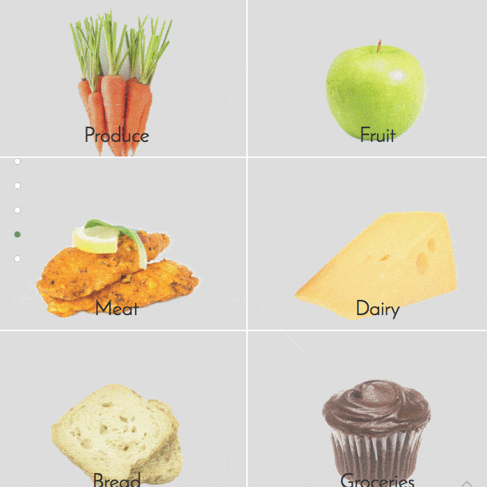

olooq landing page
Olooq was designed as a landing page for an organic products comparison website. This project was done in collaboration with a graphic designer.

random quote machine
This website pulls quotes from the ‘Random Famous Quotes’ API and displays a new quote at each click. When a new quote is displayed, the background and font colour also changes. You can also tweet the quote.
weather forecaster
This simple website finds your current location using geolocation and pulls weather data from the Dark Sky API. It displays the current weather temperature and condition along with an icon representing the weather condition. You can also switch the temperature between Fahrenheit and Celsius.
wikipedia viewer
This website allows you to search for Wikipedia articles or visit a random Wikipedia page. It grabs data from the Wikipedia API and displays the first 10 results with a snippet of the article and a link to the page itself.
itunes song listener
On this website you can search for songs listed on Itunes. The top ten results are shown along with some details including: song name, artist name, album, album image, a link to the page of the artist on Itunes, and a short 30 second preview of the song.
hi, i'm josef

I’m a self-taught frontend developer with a science background. Previously I had freelanced as a copywriter only to find myself enjoying creating and editing my website more. This led to me learning more about web development on my own.
So I've been learning frontend development using a variety of resources since March 2017. Before that, I had only dabbled a bit in VBA and python during and after university.
Coming from a background in science, I naturally enjoyed solving problems and the tech side of things. The constant learning has kept things stimulating and challenging. And often I've found myself coming up with solutions to bugs while in the shower.
Currently I’m learning more about the frontend libraries/frameworks React and Vue, and delving more deeply into Javascript - its details, ES6, and growing ecosystem.
When I'm not coding, you'll usually find me spending time with my partner talking about all sorts of things. I'm also a lover of philosophy (the practical kind), psychology, meditation, and cats! ☺
about
technologies
HTML5
CSS3
SCSS
Javascript
jQuery
Bootstrap
Photoshop
Git